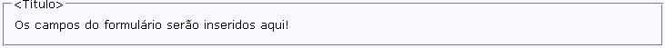

Elemento do tipo FRM representa um formulário HTML que está inserido na página. Um formulário serve como contêiner de elementos, ou seja, é uma área que pode conter elementos de formulário. Elementos de formulário são elementos que permitem ao usuário entrar informações em um formulário.
Um formulário inserido numa página pelo WIzard aparece delimitado por uma caixa a qual pode ter associada um título. Visualmente o resultado é algo semelhante com o que se vê abaixo:

Lembre-se que um formulário gerado pelo WIzard representa um Objeto que foi definido no Pré-Página.
O campo Nome define o nome pelo qual esse formulário será identificado. O valor dessa propriedade já se encontra preenchido com o prefixo do Objeto a que este formulário se refere.
IMPORTANTE:
Não é recomendado que o desenvolvedor altere o valor dessa propriedade pois ele será usado internamente pelo WIzard.
O campo Sequência indica a sequência (posição) que esse elemento possui na página. Ao se alterar o valor desse campo também se altera a posição (sequência) que o elemento irá aparecer na página. O desenvolvedor também poderá alterar a posição (sequência) do elemento na página usando os botões e que, respectivamente, deslocam-no uma posição acima ou abaixo.
O campo Ação define qual a página que será acessada após os dados do formulário terem sido enviados ao servidor.
O campo Método indica qual será o método HTTP utilizado para a transmissão dos dados do formulário. Com o método GET os dados do formulário são enviadas como uma requisição com ?<dados-do-formulario> adicionados ao fim da URL. Caso você não especifique um método este é o default.
Se algum dos dados do formulário contém caracteres que não sejam ASCII ou que possuam mais de 100 caracteres você deve usar o método POST, assim os dados são enviados no corpo da requisição. Esse método é o mais recomendado ser usado.
O campo Enctype especifica o tipo MIME usado para codificar os dados do formulário. Caso seja deixado em branco assume como valor defaultapplication/x-www-form-urlencoded. Se existir um elemento Campo do tipo Arquivo (INPUT TYPE="file") essa propriedade deve estar definida com a codificação multipart/form-data.
O campo Target indica onde (em que janela do browser) deverá ser aberto o documento especificado no campo Ação (atributo ACTION do FORM). Usando _blank o documento será aberto em uma nova janela. Usando _self se abrirá o documento no mesmo frame onde foi clicado. Usando _parent fará com que o documento seja aberto no frameset pai. Usando _top o documento será aberto em toda a janela do browser disconsiderando a existência de algum frameset.
O campo OnSubmit serve para indicar qual a função JavaScript que será executada quando for solicitado o envio dos dados do formulário.
O campo OnReset serve para indicar qual a função JavaScript que será executada quando for solicitado que seja efetuado um reset nos campos do formulário.
O campo Classe indica o nome da classe CSS que será usada para aplicar um estilo visual ao formulário. A classe CSS deve estar especificada no arquivo que serviu como modelo para a página ou deve estar em um arquivo CSS a ser incluído na página. Para incluir um arquivo CSS numa página gerada pelo WIzard selecione na combo-box o elemento <HEAD> e na propriedade Link CSS indique o caminho relativo ao servidor web do arquivo CSS desejado. Clicando em serão listadas as classes CSS que estão definidas nos arquivos CSS que foram definidos para essa página.
O campo Estilo CSS indica o estilo visual que será aplicado ao campo do elemento. Aqui o desenvolvedor especifica diretamente os código style-sheet a serem aplicados ao elemento, exemplo:
font: italic 12px Verdana, Geneva, Arial, Helvetica, sans-serif; background: blue;
O campo Complemento serve para que o desenvolvedor possa inserir atributos complementares ao formulário que está sendo definido e que não estejam relacionados entre as propriedades disponíveis.
A sessão Moldura relaciona as propriedades da moldura que delimita o formulário. Seus campos são:
O campo Ativar indica se a moldura será visualizada.
O campo Título define o título do formulário representado por esse elemento que será exibido na página.
O campo Classe indica o nome da classe CSS que será usada para aplicar um estilo visual à moldura do formulário. A classe CSS deve estar especificada no arquivo que serviu como modelo para a página ou deve estar em um arquivo CSS a ser incluído na página. Para incluir um arquivo CSS numa página gerada pelo WIzard selecione na combo-box o elemento <HEAD> e na propriedade Link CSS indique o caminho relativo ao servidor web do arquivo CSS desejado. Clicando em serão listadas as classes CSS que estão definidas nos arquivos CSS que foram definidos para essa página.
O campo Estilo CSS indica o estilo visual que será aplicado ao campo do elemento. Aqui o desenvolvedor especifica diretamente os código style-sheet a serem aplicados ao elemento, exemplo: